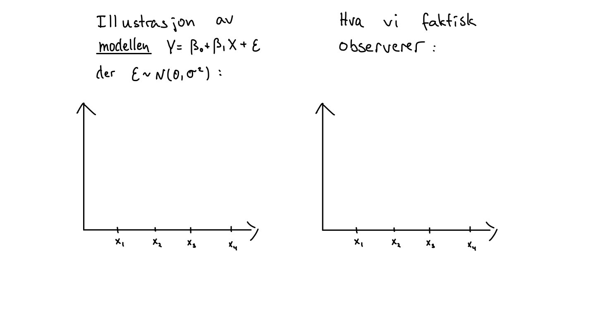
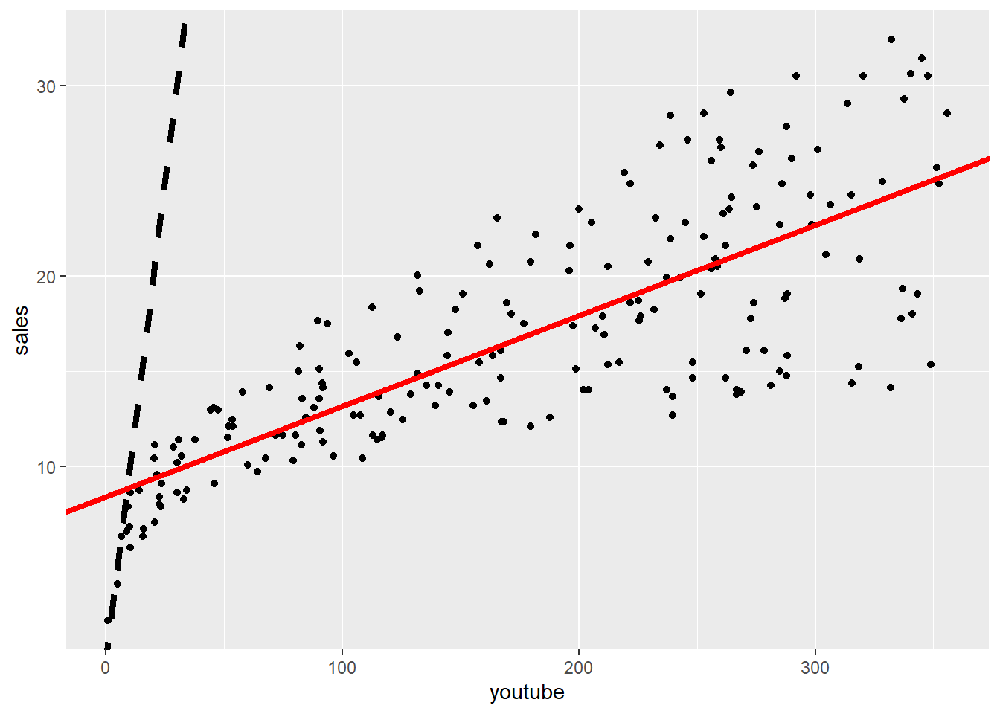
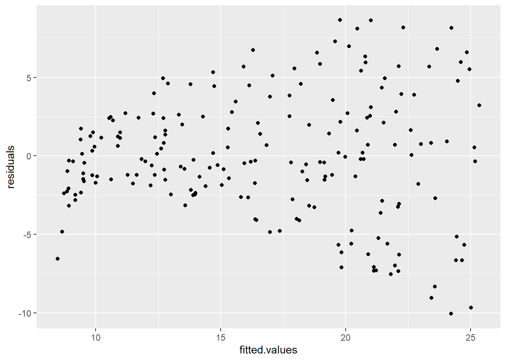

8.4 Seminar 4 - Regresjon II
- Vi har lyst til å forstå forskjellen på den statistiske modellen \(Y = \beta_0 + \beta_1X + \epsilon\) der \(\epsilon\) er normalfordelt med forventningsverdi 0 og varians \(\sigma^2\), og det vi faktisk observerer, som er par av observasjoner \((X_1, Y_1), \ldots, (X_n, Y_n)\). Klarer du å illustrere denne forskjellen ved å fortsette på tegningen under? Her har vi satt \(n=4\).

- Et lite firma som selger babyutstyr ser god effekt av å markedsføre produktene sine på Youtube. For å analysere denne sammenhengen nøyere samler de inn historiske data på hvor mye de har brukt på Youtube-reklame (
youtube) i løpet av en måned, og omsetningen den måneden (sales), og gjennomfører så en enkel lineær regresjon medyoutubesom forklaringsvariabel ogsalessom responsvariabel. Gi en kort fortolkning av regresjonsutskriften under:
##
## ===============================================
## Dependent variable:
## ---------------------------
## sales
## -----------------------------------------------
## youtube 0.048***
## (0.003)
##
## Constant 8.439***
## (0.549)
##
## -----------------------------------------------
## Observations 200
## R2 0.612
## Adjusted R2 0.610
## Residual Std. Error 3.910 (df = 198)
## F Statistic 312.145*** (df = 1; 198)
## ===============================================
## Note: *p<0.1; **p<0.05; ***p<0.01- I figuren under har vi plottet inn datasettet, den estimerte regresjonslinjen (rød heltrukken strek), samt linjen \(y = x\) (sort stiplet linje). Hvordan skal babyutstyrforhandleren tolke denne figuren?

- Ved hjelp av den estimerte regresjonsmodellen lager babyutstyrforhandleren følgende plott av residualene mot de predikerte verdiene for hver observasjon i datasettet. Hva sier denne figuren oss om lineær regresjon som modell for sammenhengen mellom penger brukt på markedsføring og omsetning?

Det er gjort mange forsøk på å forklare hvorfor noen land er rike, mens andre land er fattige, se f.eks hjemmeeksamen i MET4, V17. En mulig forklaring kan ligge in landenes fysiske og geografiske egenskaper. For eksempel, kan det hende at land som har ulendt terreng kan ha større vanskeligheter med å bygge infrastruktur og frakte varer enn land som er helt flate, og dermed ende opp som fattigere av den grunn?
Vi ser på et lite datasett (lånt fra boken Statistical Rethinking) der vi har et mål på landenes rikdom (logaritmen av BNP, log_gdp), samt et mål på hvor ulendt terrenget er i det landet (rugged). Vi har også mer informasjon om landene, for eksempel om det ligger i Afrika eller ikke (cont_africa).
Vi har gjort tre regresjonsanalyser i R, med følgende utskrifter:
##
## =======================================================================================
## Dependent variable:
## -------------------------------------------------------------------
## log_gdp
## (1) (2) (3)
## ---------------------------------------------------------------------------------------
## rugged 0.003 -0.067 -0.203***
## (0.077) (0.064) (0.077)
##
## cont_africa -1.469*** -1.948***
## (0.165) (0.227)
##
## rugged:cont_africa 0.393***
## (0.132)
##
## Constant 8.513*** 9.030*** 9.223***
## (0.136) (0.127) (0.140)
##
## ---------------------------------------------------------------------------------------
## Observations 170 170 170
## R2 0.00001 0.322 0.357
## Adjusted R2 -0.006 0.314 0.345
## Residual Std. Error 1.170 (df = 168) 0.966 (df = 167) 0.944 (df = 166)
## F Statistic 0.001 (df = 1; 168) 39.715*** (df = 2; 167) 30.712*** (df = 3; 166)
## =======================================================================================
## Note: *p<0.1; **p<0.05; ***p<0.01Skriv opp de tre estimerte regresjonsmodellene.
Gi en kort fortolkning av modell (2).
Gi en forklaring på hva vi lærer ved å gå fra modell (2) til modell (3). Fokuser spesielt på rollen til interaksjonsleddet (
rugged:cont_africa). Hvordan kan det ha seg atrugged-variabelen nå plutselig er statistisk signifikant forskjelig fra null? Kan du tenke deg en praktisk fortolkning av disse resultatene?